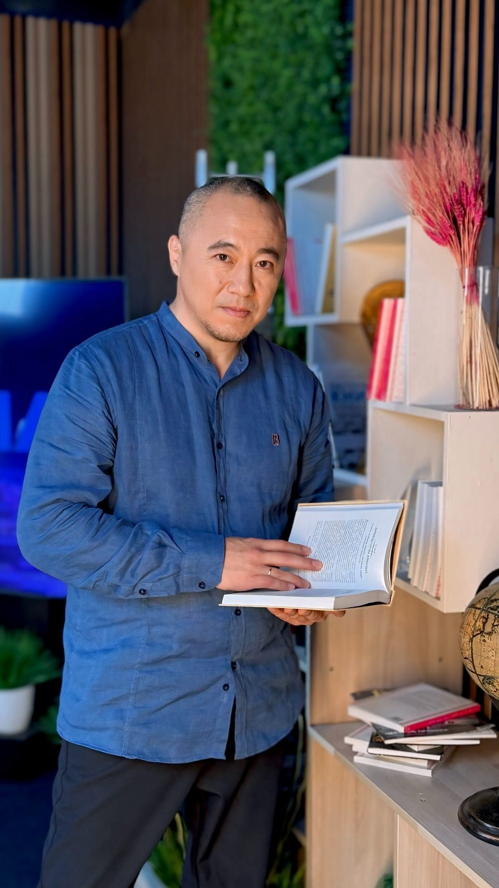

Метод, который родился в работе с людьми
Этот метод не из учебников – он родился в работе с людьми, которым не помогали стандартные подходы.
В основе – школы, которые обычно не встречаются в одних руках: краниальные и фасциальные техники, работа с внутренними органами, биодинамика, психосоматика и подсознание. Ержан учился в казахстанско-российской школе остеопатии и лично у Александра Нееля (D.O., Франция) – одного из ведущих преподавателей биодинамики.
Ержан Кабдрашит (Тусупов) – основатель EK Harmony Center

Дипломы и сертификаты
Метод собран из школ, которые редко встречаются в одних руках: остеопрактика, биодинамика у Alexandre Neel (D.O., Франция) и прикладная кинезиология. Листайте, чтобы посмотреть все →
С чем приходят на сеансы
Чаще всего приходят, когда попробовали разные процедуры и массаж, но результата нет или он очень краткосрочный
Снять симптом – мало
Тело помнит стрессы, страхи, тяжёлые события. Это напряжение оседает в мышцах и фасциях – и никакой массаж не убирает его надолго, потому что причина остаётся внутри.
Метод работает одновременно на трёх уровнях – тело, эмоции, внутреннее состояние. Когда внутренний источник напряжения исчезает, телу больше незачем зажиматься.
Три программы
Каждая подбирается индивидуально – по состоянию и запросу. Начать можно с одного сеанса
Что остаётся после
Курс заканчивается – результат остаётся
Каждый организм проходит программу в своём темпе – результаты индивидуальны.
Частые вопросы
Другие направления
Тело умеет восстанавливаться. Начните с одного сеанса
Напишите менеджеру вашего города – он ответит на вопросы и подберёт время